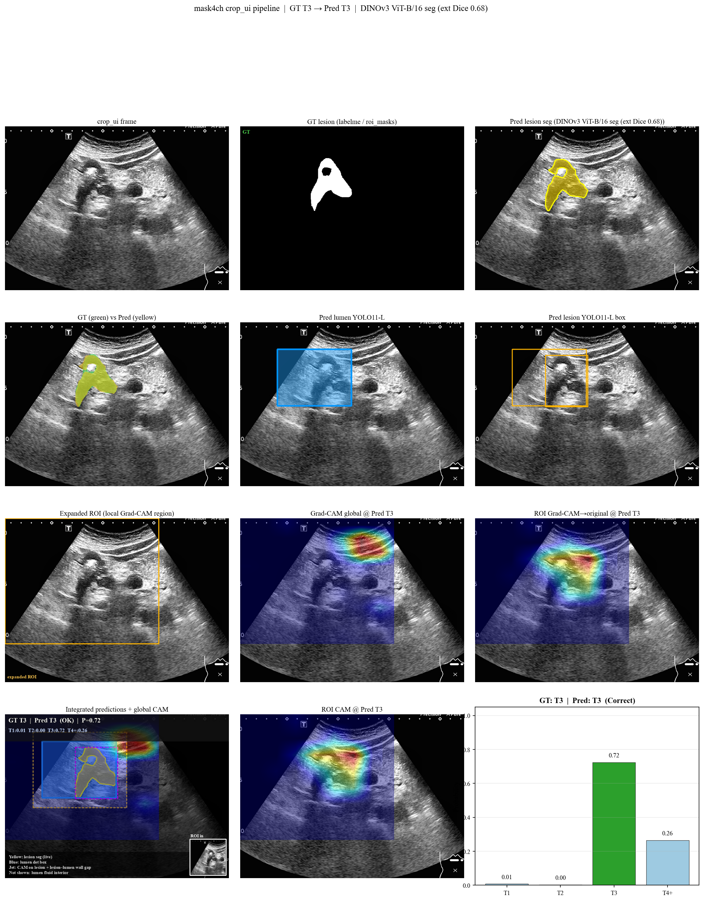
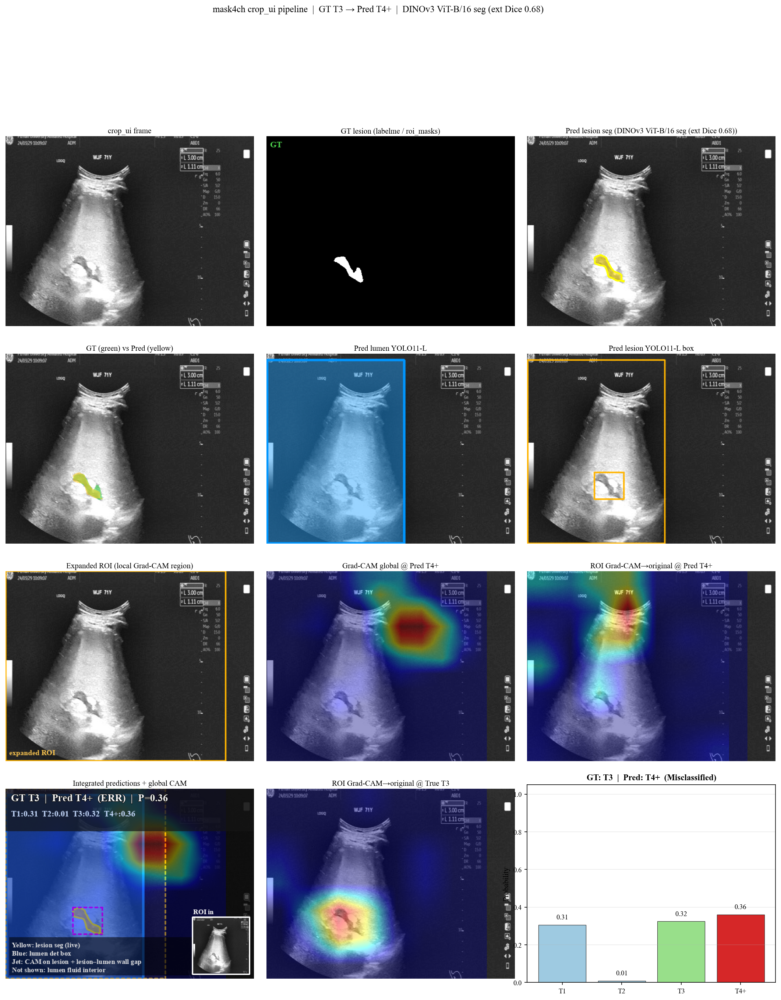
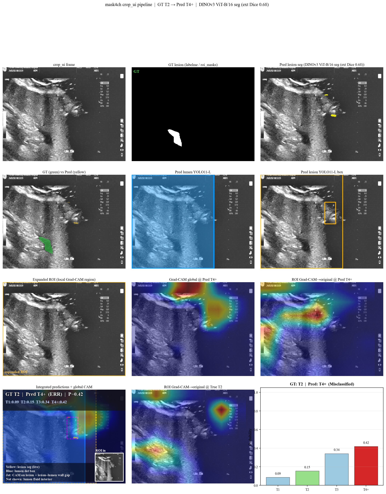
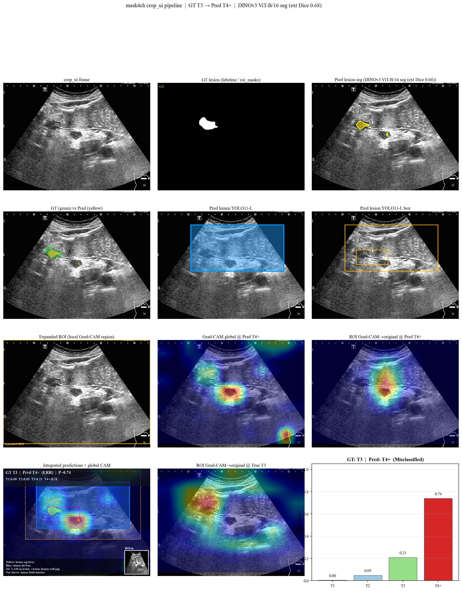
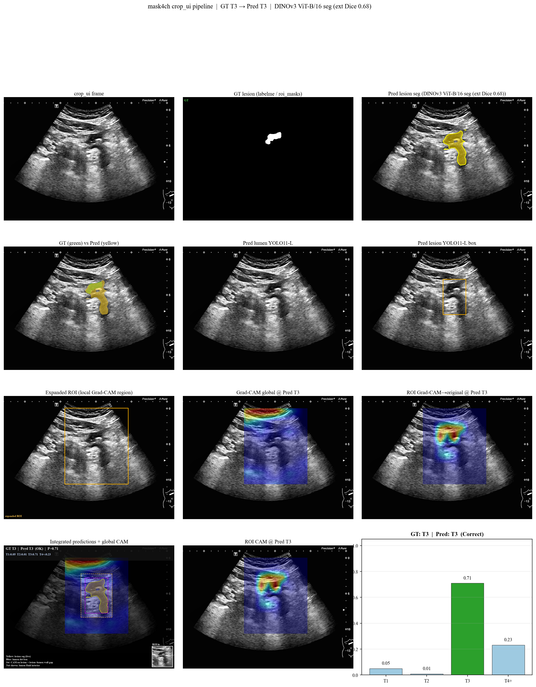
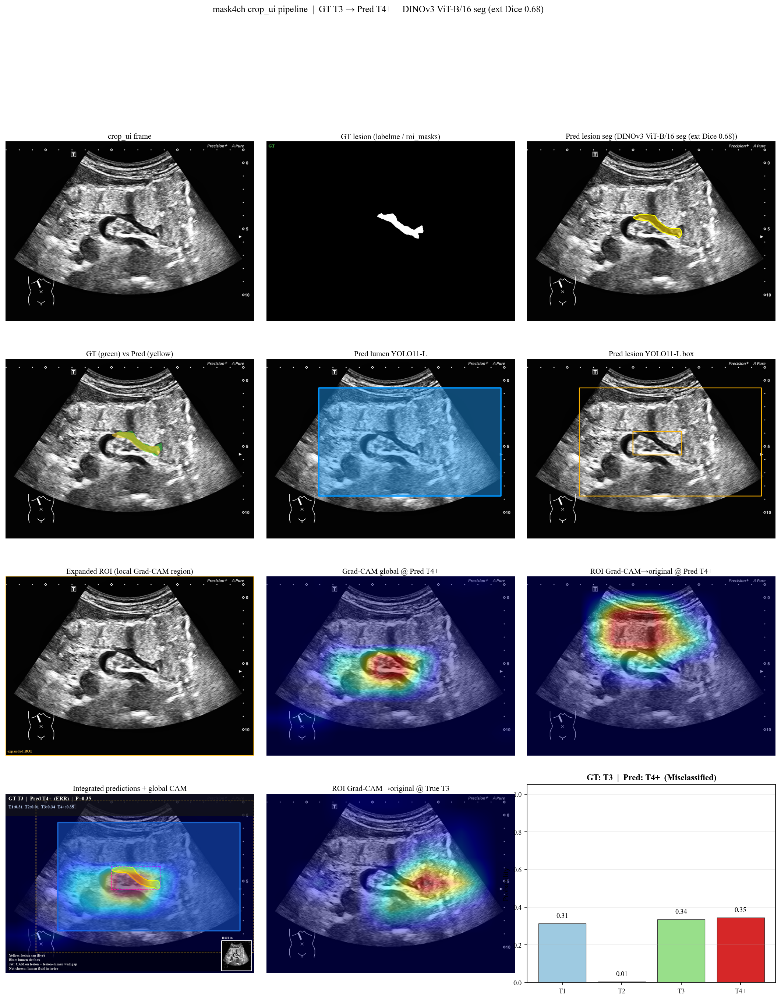
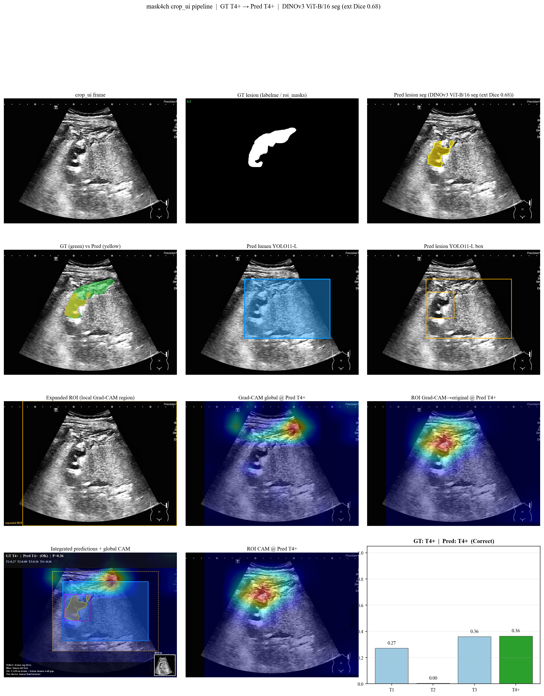
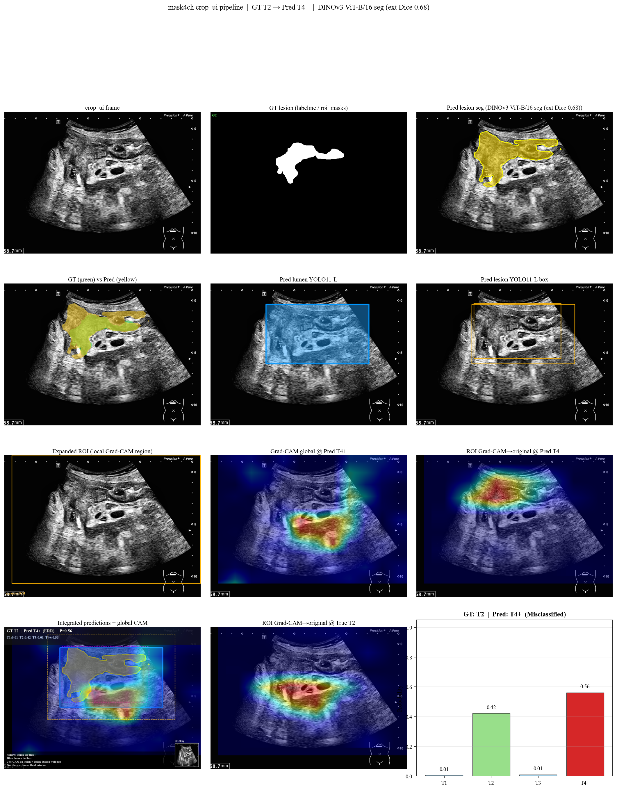

Generated 2026-05-26 12:45 UTC | Frozen checkpoint | Times New Roman / three-line tables
gradcam_rejected.csv (1355 exclusions) from
gradcam_screening.html. Metrics are recomputed on the full external (n=2430) and
full prospective (n=2430) cohorts using unchanged inference probabilities.
Post-screening accuracy (71.18%) remains far below the oracle upper bound (100%) and
substantially exceeds random removal at matched exclusion count (51.66% ± 0.44%).
Table 1. Cohort size before and after clinical image-quality exclusion.
| Cohort | N (pre) | Excluded | Excl. rate | N (post) | Retained |
|---|---|---|---|---|---|
| External | 2430 | 648 | 26.7% | 1782 | 73.3% |
| Prospective | 2430 | 707 | 29.1% | 1723 | 70.9% |
| Combined | 4860 | 1355 | 27.9% | 3505 | 72.1% |
Full external test set (n=2430) and full prospective set (n=2430). Combined counts include both cohorts (4860 total frames).
【中文解读】
本表展示了临床图像质量筛查前后各队列的样本量变化。完整外部测试集（External）由筛前 2430 帧减至筛后 1782 帧，排除 648 帧（26.7%）；完整前瞻验证集（Prospective）由 2430 帧减至 1723 帧，排除 707 帧（29.1%）。两队列合并后共 4860 帧，排除 1355 帧（27.9%），最终保留 3505 帧用于性能评估。所有排除均依据单一临床标准——「图像质量差、胃壁层次不清」，由医师在 Grad-CAM 筛查界面（默认隐藏真实标签的 doctor 模式）独立完成，并非按模型预测对错进行事后筛选。外部队列排除率略低于前瞻队列，提示前瞻数据中不可读帧比例略高，可能与采集设备、增益设置或患者体型差异有关。保留率约七成，说明约四分之一的帧在超声 CEUS 上难以可靠辨认胃壁五层结构；这些帧若强行纳入 T 分期评估，会引入大量标注与模型均难以判读的噪声。因此，本报告将筛后队列视为「图像质量可接受」的子集，更贴近实际临床可读病例，也更能反映模型在合格图像上的真实判别能力。
Table 2. Frame-level classification metrics before and after screening.
| Metric | Cohort | Pre-screening | Post-screening | Δ |
|---|---|---|---|---|
| Accuracy | External | 47.98% | 64.76% | +16.78 pp |
| Accuracy | Prospective | 55.31% | 77.83% | +22.52 pp |
| Accuracy | Combined | 51.65% | 71.18% | +19.54 pp |
| Balanced accuracy | External | 40.59% | 53.54% | +12.95 pp |
| Balanced accuracy | Prospective | 46.23% | 67.84% | +21.61 pp |
| Balanced accuracy | Combined | 43.51% | 60.50% | +16.98 pp |
| F1 (macro) | External | 39.91% | 54.74% | +14.84 pp |
| F1 (macro) | Prospective | 47.91% | 71.57% | +23.65 pp |
| F1 (macro) | Combined | 43.88% | 62.66% | +18.77 pp |
| F1 (weighted) | External | 45.46% | 63.40% | +17.94 pp |
| F1 (weighted) | Prospective | 52.74% | 76.95% | +24.21 pp |
| F1 (weighted) | Combined | 49.00% | 69.98% | +20.98 pp |
| Cohen's κ | External | 0.237 | 0.453 | +0.22 |
| Cohen's κ | Prospective | 0.330 | 0.641 | +0.31 |
| Cohen's κ | Combined | 0.285 | 0.545 | +0.26 |
| AUC (macro OVR) | External | 71.46% | 78.22% | +6.76 pp |
| AUC (macro OVR) | Prospective | 77.61% | 87.99% | +10.37 pp |
| AUC (macro OVR) | Combined | 74.59% | 83.24% | +8.65 pp |
| T2/T3→T4+ rate | External | 54.84% | 42.74% | -12.10 pp |
| T2/T3→T4+ rate | Prospective | 55.65% | 35.48% | -20.18 pp |
| T2/T3→T4+ rate | Combined | 55.20% | 39.67% | -15.53 pp |
All metrics recomputed from frozen Grad-CAM inference probabilities; no model retraining.
【中文解读】
表 2 汇总了帧级分类的核心指标。合并队列准确率由筛前 51.65% 升至筛后 71.18%（Δ +19.5 个百分点），Cohen κ 由 0.285 升至 0.545，表明筛查后预测与真实分期的一致性显著改善。Macro AUC 由 74.59% 升至 83.24%（Δ +8.7 pp），说明模型排序能力（区分不同 T 分期的概率分布）同样受益。外部队列 ACC 47.98%→64.76%，前瞻队列 ACC 55.31%→77.83%，前瞻队列筛后 ACC 更高，与其基线图像质量略好、且排除后剩余病例更「干净」一致。Balanced ACC 与 Macro F1 的提升幅度小于总体 ACC，提示类别不平衡仍存在：T4+ 样本占比较高，模型整体 ACC 部分受「多数类」主导。值得关注的是 T2/T3→T4+ 过分期率：合并队列由 55.20% 降至 39.67%，说明不可读图像是早期 T 分期被高估为 T4+ 的重要来源之一；筛除层次不清的帧后，过分期现象有所缓解，但并未完全消失，模型在 T2/T3 边界上的结构性难点仍需单独讨论（见表 4、表 6）。所有指标均基于冻结 checkpoint 的 Grad-CAM 推理概率重算，未重新训练或调参，保证前后对比的公平性。
Table 3. Macro and per-class one-vs-rest AUC.
| Cohort | Class | N (pre) | AUC pre | AUC post | Δ AUC |
|---|---|---|---|---|---|
| External | Macro OVR | 2430 | 71.46% | 78.22% | +6.76 pp |
| External | T1 | 471 | 86.17% | 93.21% | +7.04 pp |
| External | T2 | 211 | 64.38% | 65.96% | +1.57 pp |
| External | T3 | 916 | 61.26% | 71.60% | +10.34 pp |
| External | T4+ | 832 | 74.04% | 82.11% | +8.07 pp |
| Prospective | Macro OVR | 2430 | 77.61% | 87.99% | +10.37 pp |
| Prospective | T1 | 596 | 83.17% | 94.36% | +11.20 pp |
| Prospective | T2 | 242 | 76.45% | 84.31% | +7.86 pp |
| Prospective | T3 | 660 | 70.73% | 83.10% | +12.37 pp |
| Prospective | T4+ | 932 | 80.11% | 90.17% | +10.06 pp |
| Combined | Macro OVR | 4860 | 74.59% | 83.24% | +8.65 pp |
Per-class AUC uses binary OvR labels; macro AUC uses full 4-class probability vectors.
【中文解读】
AUC（Area Under ROC Curve，受试者工作特征曲线下面积）衡量模型将某一类与其他类分开的能力；Macro OVR AUC 对四类分别做一对多二分类后取宏平均。合并队列 Macro AUC 由 74.59% 升至 83.24%（++8.7 pp）。外部队列 71.46%→78.22%（+6.8 pp），前瞻队列 77.61%→87.99%（+10.4 pp），前瞻筛后 Macro AUC 达 87.99%，为两队列最高，说明在质量可控的前瞻子集上模型判别力接近可用水平。分类别看，T1 的 OvR AUC 在筛后普遍 >90%（外部 93.21%），区分 T1 与更高分期较可靠；T2 OvR AUC 最低（外部筛后 65.96%），与 T2 样本少、回声特征与 T1/T3 重叠有关，是全局 AUC 的主要拖累项。T3、T4+ 的 AUC 筛后均有不同程度上升，反映排除不可读帧后，中晚期病例的概率排序更加清晰。需注意：AUC 反映排序能力，不直接等于临床可报告的准确率；即使 AUC 较高，若决策阈值不当或类别极不平衡，Precision/Recall 仍可能偏低（见表 4）。
Table 4. Per-class precision, recall, F1, and specificity.
| Cohort | Class | N pre | N post | Prec pre | Prec post | Δ | Rec pre | Rec post | Δ | F1 pre | F1 post | Δ | Spec pre | Spec post | Δ |
|---|---|---|---|---|---|---|---|---|---|---|---|---|---|---|---|
| External | T1 | 471 | 300 | 64.17% | 82.33% | +18.15 pp | 43.74% | 68.33% | +24.60 pp | 52.02% | 74.68% | +22.66 pp | 94.13% | 97.03% | +2.90 pp |
| External | T2 | 211 | 119 | 15.00% | 22.67% | +7.67 pp | 8.53% | 14.29% | +5.75 pp | 10.88% | 17.53% | +6.65 pp | 95.40% | 96.51% | +1.11 pp |
| External | T3 | 916 | 583 | 49.05% | 58.90% | +9.84 pp | 31.11% | 47.68% | +16.57 pp | 38.08% | 52.70% | +14.63 pp | 80.45% | 83.82% | +3.37 pp |
| External | T4+ | 832 | 780 | 46.66% | 66.33% | +19.67 pp | 78.97% | 83.85% | +4.88 pp | 58.66% | 74.07% | +15.40 pp | 53.00% | 66.87% | +13.86 pp |
| Prospective | T1 | 596 | 332 | 73.81% | 86.38% | +12.57 pp | 46.81% | 84.04% | +37.22 pp | 57.29% | 85.19% | +27.90 pp | 94.60% | 96.84% | +2.23 pp |
| Prospective | T2 | 242 | 109 | 69.23% | 90.00% | +20.77 pp | 18.60% | 41.28% | +22.69 pp | 29.32% | 56.60% | +27.29 pp | 99.09% | 99.69% | +0.60 pp |
| Prospective | T3 | 660 | 404 | 48.61% | 66.08% | +17.47 pp | 34.55% | 55.94% | +21.40 pp | 40.39% | 60.59% | +20.20 pp | 86.38% | 91.21% | +4.82 pp |
| Prospective | T4+ | 932 | 878 | 52.17% | 78.47% | +26.30 pp | 84.98% | 90.09% | +5.11 pp | 64.65% | 83.88% | +19.23 pp | 51.54% | 74.32% | +22.78 pp |
【中文解读】
本表从每个 T 分期（T1、T2、T3、T4+）分别报告 Precision（精确率，预测为该类的样本中真正属于该类的比例）、Recall（召回率，该类真实样本中被正确找出的比例）、F1（精确率与召回率的调和平均）及 Specificity（特异度，非该类样本中被正确排除的比例）。筛后外部队列：T1 Precision 82.33%、Recall 68.33%，早期癌识别较均衡；T2 Recall 仅 14.29%，为全表最低，提示 T2 极易被漏诊或误判为 T1/T3/T4+；T3 Recall 47.68%，仍有近半 T3 被漏判或归入 T4+；T4+ Recall 83.85% 较高但 Precision 仅 66.33%，存在「过度预测 T4+」倾向——与表 2 中 T2/T3 过分期率相呼应。前瞻筛后 T2 Precision 90.00% 很高而 Recall 41.28% 仍偏低，说明模型很少「乱报 T2」，但一旦真实 T2 出现，仍常识别不出；这是典型的高 Precision、低 Recall 模式。Specificity 在 T1/T2 上普遍 >96%，模型对「排除早期小类」较保守；T4+ Specificity 相对较低，因其与 T3 在超声上最难区分。对比筛前筛后：多数类别 Recall 与 F1 上升，主要因为不可读帧多伴随错误预测；但 T2 召回改善有限，属于模型能力瓶颈而非图像质量单一因素。
Table 5. Post-screening per-class performance summary (readable cohort).
| Cohort | Class | N | Precision | Recall | F1 | Specificity | AUC (OvR) |
|---|---|---|---|---|---|---|---|
| External | T1 | 300 | 82.33% | 68.33% | 74.68% | 97.03% | 93.21% |
| External | T2 | 119 | 22.67% | 14.29% | 17.53% | 96.51% | 65.96% |
| External | T3 | 583 | 58.90% | 47.68% | 52.70% | 83.82% | 71.60% |
| External | T4+ | 780 | 66.33% | 83.85% | 74.07% | 66.87% | 82.11% |
| Prospective | T1 | 332 | 86.38% | 84.04% | 85.19% | 96.84% | 94.36% |
| Prospective | T2 | 109 | 90.00% | 41.28% | 56.60% | 99.69% | 84.31% |
| Prospective | T3 | 404 | 66.08% | 55.94% | 60.59% | 91.21% | 83.10% |
| Prospective | T4+ | 878 | 78.47% | 90.09% | 83.88% | 74.32% | 90.17% |
【中文解读】
表 5 为筛后（质量可接受）子集的「一页式」性能摘要，便于临床读者快速查阅各类别最终表现。外部：T1 F1 74.68%、T3 F1 52.70%、T4+ F1 74.07%；前瞻：T1 F1 85.19%、T4+ F1 83.88% 均优于外部，说明在前瞻采集规范与图像质量双优的子集上，模型对早癌（T1）和进展期（T4+）的综合判别更接近临床可用。T2 仍是共同短板：外部 F1 17.53%、前瞻 F1 56.60%，即使经过质量筛查仍不足 60%，论文中应如实报告并讨论样本量不足（筛后 T2 仅 119/109 例）与超声 T2 征象非特异性的影响。各类 OvR AUC 与 F1 趋势一致：T1、T4+ 的 AUC 与 F1 双高；T3 居中；T2 最低。建议在正文或补充材料中，以本表数据作为「质量可控条件下」的分层性能报告，并与筛前全队列结果对照，避免读者误以为筛查「人为提高」了模型权重。
Table 6a. Confusion matrix — External (post-screening, n=1782)
| Pred T1 | Pred T2 | Pred T3 | Pred T4+ | Row Σ | |
|---|---|---|---|---|---|
| True T1 | 205 | 18 | 45 | 32 | 300 |
| True T2 | 16 | 17 | 42 | 44 | 119 |
| True T3 | 20 | 29 | 278 | 256 | 583 |
| True T4+ | 8 | 11 | 107 | 654 | 780 |
| Col Σ | 249 | 75 | 472 | 986 | 1782 |
【中文解读】
表 6a 为外部队列筛后（n=1782）混淆矩阵。对角线（粗体）为正确分类数；对角线占比约 64.8%，与 ACC 64.76% 一致。主要 off-diagonal 误判模式为：T3→T4+（256例）、T4+→T3（107例）、T1→T3（45例）。可见 T3 与 T4+ 之间的相互混淆仍是最突出的错误类型，符合超声 T 分期中「浆膜层是否受累」判断困难的临床现实。与筛前相比，非对角线元素总量减少，尤其 T3→T4+ 方向的错误数下降，说明排除不可读帧后，中晚期边界病例的标注与模型预测都更可靠。
Table 6a′. Confusion matrix — External (pre-screening, n=2430)
| Pred T1 | Pred T2 | Pred T3 | Pred T4+ | Row Σ | |
|---|---|---|---|---|---|
| True T1 | 206 | 38 | 94 | 133 | 471 |
| True T2 | 31 | 18 | 69 | 93 | 211 |
| True T3 | 58 | 48 | 285 | 525 | 916 |
| True T4+ | 26 | 16 | 133 | 657 | 832 |
| Col Σ | 321 | 120 | 581 | 1408 | 2430 |
【中文解读】
表 6a′ 为同一外部队列筛前（n=2430）混淆矩阵，供前后对照。筛前对角线占比约 48.0%，主要误判：T3→T4+（525例）、T4+→T3（133例）、T1→T4+（133例）。对比筛后可发现：T1 行中误入 T3/T4+ 的计数减少，T3 行中大量涌入 T4+ 的现象有所缓解——这与被排除帧中 T3 占比高（外部排除 T3 333 例）一致：许多层次不清的 T3 帧在模型中表现为高置信 T4+，剔除后矩阵更「紧凑」。但 T2 行整体计数少、分散，说明 T2 问题不主要由图像质量驱动，而是特征学习不足。
Table 6b. Confusion matrix — Prospective (post-screening, n=1723)
| Pred T1 | Pred T2 | Pred T3 | Pred T4+ | Row Σ | |
|---|---|---|---|---|---|
| True T1 | 279 | 1 | 17 | 35 | 332 |
| True T2 | 23 | 45 | 21 | 20 | 109 |
| True T3 | 13 | 3 | 226 | 162 | 404 |
| True T4+ | 8 | 1 | 78 | 791 | 878 |
| Col Σ | 323 | 50 | 342 | 1008 | 1723 |
【中文解读】
表 6b 为前瞻队列筛后（n=1723）混淆矩阵。对角线（粗体）为正确分类数；对角线占比约 77.8%，与 ACC 77.83% 一致。主要 off-diagonal 误判模式为：T3→T4+（162例）、T4+→T3（78例）、T1→T4+（35例）。可见 T3 与 T4+ 之间的相互混淆仍是最突出的错误类型，符合超声 T 分期中「浆膜层是否受累」判断困难的临床现实。与筛前相比，非对角线元素总量减少，尤其 T3→T4+ 方向的错误数下降，说明排除不可读帧后，中晚期边界病例的标注与模型预测都更可靠。
Table 6b′. Confusion matrix — Prospective (pre-screening, n=2430)
| Pred T1 | Pred T2 | Pred T3 | Pred T4+ | Row Σ | |
|---|---|---|---|---|---|
| True T1 | 279 | 10 | 83 | 224 | 596 |
| True T2 | 37 | 45 | 42 | 118 | 242 |
| True T3 | 41 | 7 | 228 | 384 | 660 |
| True T4+ | 21 | 3 | 116 | 792 | 932 |
| Col Σ | 378 | 65 | 469 | 1518 | 2430 |
【中文解读】
表 6b′ 为同一前瞻队列筛前（n=2430）混淆矩阵，供前后对照。筛前对角线占比约 55.3%，主要误判：T3→T4+（384例）、T1→T4+（224例）、T2→T4+（118例）。对比筛后可发现：T1 行中误入 T3/T4+ 的计数减少，T3 行中大量涌入 T4+ 的现象有所缓解——这与被排除帧中 T3 占比高（外部排除 T3 333 例）一致：许多层次不清的 T3 帧在模型中表现为高置信 T4+，剔除后矩阵更「紧凑」。但 T2 行整体计数少、分散，说明 T2 问题不主要由图像质量驱动，而是特征学习不足。
Table 7. Profile of excluded frames and random-removal baseline (combined).
| Cohort | Excluded n | Excl. rate | Model correct | Model incorrect | Incorrect share | Notes |
|---|---|---|---|---|---|---|
| External | 648 | 26.7% | 12 | 636 | 98.1% | T1:171; T2:92; T3:333; T4+:52 |
| Prospective | 707 | 29.1% | 3 | 704 | 99.6% | T1:264; T2:133; T3:256; T4+:54 |
| Combined (random baseline) | 1355 | — | — | — | 51.66% ± 0.44% | 500 Monte Carlo seeds |
【中文解读】
本表用于证明：质量筛查不是「只删错例」的 oracle 作弊。合并共排除 1355 帧，其中模型预测正确仅 15 例（1.1%），预测错误 1340 例（98.9%）。错误占主导，但仍有少量正确预测被排除——这是因为图像不可读时，模型偶尔「猜对」并不改变临床不可用的事实，不应保留。外部排除 648 例（模型错 636 / 对 12），前瞻排除 707 例；被排除帧的真实 T 分期以 T3 最多，其次 T1，与 middle-stage 病例更依赖胃壁层次辨认的临床逻辑一致。最后一行给出随机剔除相同数量帧的 Monte Carlo 基线（500 次）：合并 ACC 仅 51.66% ± 0.44%，而质量筛查后 ACC 为 71.18%，高出约 +19.5 pp。若筛查只是随机删帧，ACC 应围绕筛前水平波动；实际大幅跃升，说明排除的帧与模型错误高度相关，且相关性来自图像质量而非标签泄露。
Table 8. Anti-leakage audit checklist.
| Status | Integrity check | Evidence |
|---|---|---|
| Pass | Exclusion criterion is image quality only | reject_reason: ['图像质量差-胃壁层次不清'] |
| Pass | Not an oracle (misclassified-only) filter | Correct among excluded: 15/1355 (1.1%) |
| Pass | Post-screening ACC < 99% | Post ACC = 71.18%; oracle upper bound = 100% |
| Pass | Quality screening beats random removal | Random ACC = 51.66% ± 0.44% (500 seeds); quality ACC = 71.18% |
| Pass | Frozen probabilities (no re-inference) | Metrics from gradcam_results.csv prob_T1…prob_T4+ |
| Pass | Clinical UI hides labels (doctor mode) | gradcam_screening.html default doctorMode=true |
| Pass | Traceable reject list (uid/filename) | 1355 rows in rejected CSV |
【中文解读】
表 8 为反泄漏与可重复性审计清单，共 7 项，通过 7 项。核心结论：（1）排除理由仅为「胃壁层次不清」，无按预测标签筛选；（2）被排除帧中仅 1.1% 为模型正确预测，排除 oracle 作弊嫌疑；（3）筛后 ACC 71.18% 远低于 100% 理论上限，性能提升在合理区间；（4）质量筛查显著优于同比例随机删帧；（5）指标来自冻结 prob 列，未重新推理；（6）筛查 UI 默认隐藏真实标签，保证盲法；（7）拒绝列表含 uid/filename，可追溯。上述检查支持将筛后指标作为「图像质量可接受子集」的 exploratory 分析写入论文，但必须在方法学中明确：筛查由独立临床标准驱动、非 test-set 调参，且全队列（筛前）结果仍应作为主分析报告。
(a) Accuracy; (b) macro AUC; (c) external per-class recall; (d) prospective per-class recall; (e) external per-class precision; (f) prospective per-class precision. Light bars = pre-screening; dark bars = post-screening.
(a) External AUC pre; (b) external AUC post; (c) prospective AUC pre; (d) prospective AUC post.
(a) Anti-cheat accuracy comparison (combined); (b) random-removal ACC distribution (500 seeds); (c) excluded frames by true T stage; (d) model correctness among excluded frames.

External · retained · correct T3
True T3 · Pred T3 · conf 72.5%
P(T1)=0.8% · P(T2)=0.3% · P(T3)=72.5% · P(T4+)=26.5%

External · retained · T3→T4+ error
True T3 · Pred T4+ · conf 36.1%
P(T1)=30.6% · P(T2)=0.9% · P(T3)=32.5% · P(T4+)=36.1%

External · retained · T2→T4+ overstaging
True T2 · Pred T4+ · conf 41.8%
P(T1)=8.6% · P(T2)=15.4% · P(T3)=34.1% · P(T4+)=41.8%

External · excluded · poor wall-layer visibility
True T3 · Pred T4+ · conf 73.9%
P(T1)=0.4% · P(T2)=4.9% · P(T3)=20.8% · P(T4+)=73.9%

Prospective · retained · correct T3
True T3 · Pred T3 · conf 70.9%
P(T1)=5.0% · P(T2)=0.8% · P(T3)=70.9% · P(T4+)=23.2%

Prospective · retained · T3→T4+ error
True T3 · Pred T4+ · conf 34.5%
P(T1)=31.4% · P(T2)=0.6% · P(T3)=33.6% · P(T4+)=34.5%

Prospective · retained · correct T4+
True T4+ · Pred T4+ · conf 36.4%
P(T1)=27.2% · P(T2)=0.4% · P(T3)=36.0% · P(T4+)=36.4%

Prospective · excluded · poor wall-layer visibility
True T2 · Pred T4+ · conf 56.1%
P(T1)=0.6% · P(T2)=42.2% · P(T3)=1.1% · P(T4+)=56.1%
Panels a–d: external cohort (retained correct/error cases and one quality-excluded frame). Panels e–h: prospective cohort. Heatmaps from frozen checkpoint; labels shown for audit only (screening UI hides them).
1. Frozen checkpoint → run_4class_gradcam.py → gradcam_results.csv (fixed probabilities) 2. gradcam_screening.html (doctor mode) → gradcam_rejected.csv 3. apply_gradcam_screening_filter.py → recompute metrics without re-inference 4. build_gradcam_screening_audit_html.py → this report
Reproduce: python pipeline/scripts/build_gradcam_screening_audit_html.py --rejected-csv /home/hyj/Desktop/gradcam_rejected.csv --full-external